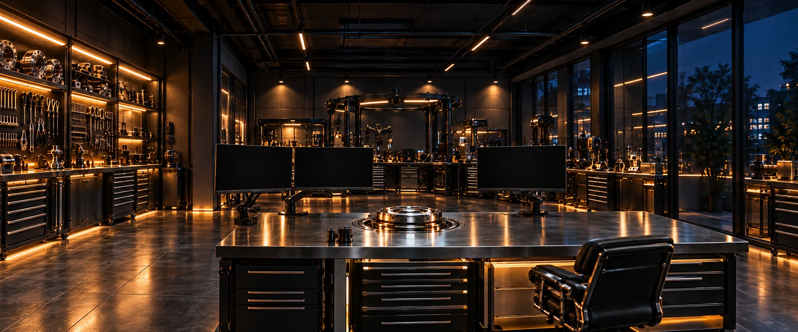
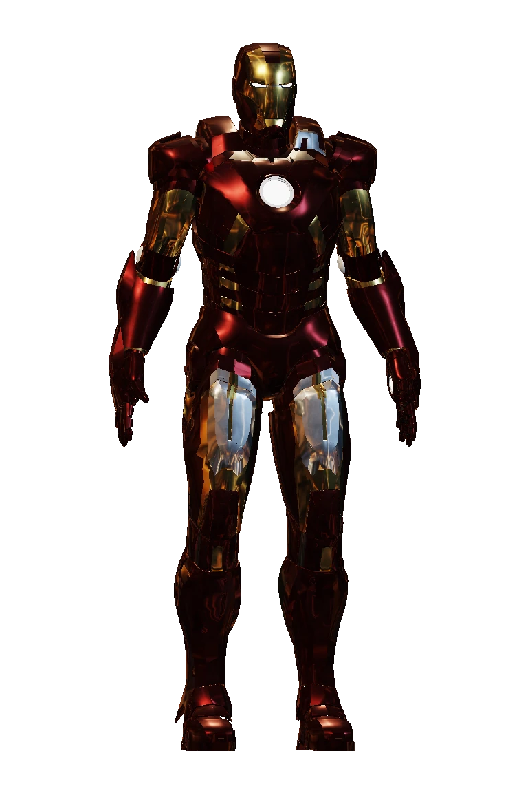

Polangui HQ
Switch on lamp
Inspect armour
Inspect BU ID
Use computer
Quit to Website
Polangui HQ · Jarvis
Top 10 stores
Sales by category
Sales over time
Anomalies & Trends
Opening Nexa's workshop.